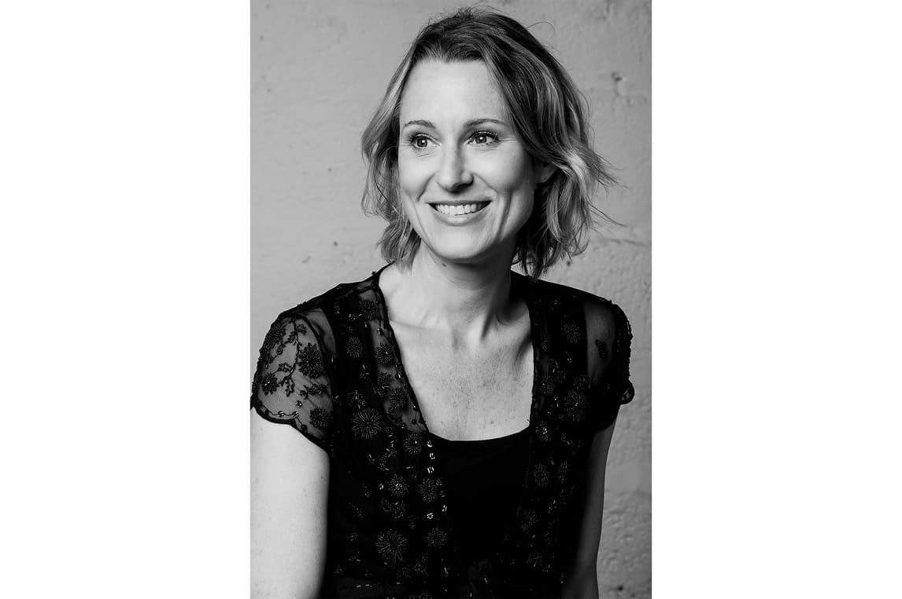

Poet · Educator · Editor
Ellen
Elder
Poems shaped by memory, motherhood, and the experience of belonging to more than one place.
Discover her story
A life in language
About Ellen
Ellen Elder is a poet and educator whose work attends to motherhood, grief, exile, trauma, loss, and nostalgia through the lens of transnational experience.
Born in New York City and raised in Cincinnati, she spent childhood summers in Ireland, where her family ran an inn. She earned a BA from the University of Chicago, an MA from Miami University, and a PhD from the University of Wisconsin–Milwaukee.
After teaching at Heinrich Heine University in Düsseldorf, Germany, where she lived for nine years, Ellen moved to Charleston, South Carolina. She taught in public schools and is a co-poetry editor at Literary Mama.
Read Ellen’s Poetry Foundation profileFrom the archive
Selected work
Poetry and reviews published in Literary Mama.
- Poetry Fibroids
- Review · 2022 A Review of Tick Tock: Essays on Becoming a Parent After 40
- Review · 2023 Motherhood Unshorn: A Review of Reaching the Shore of the Sea of Fertility
- Essay · 2024 Notes From Labor of Love: Ellen Elder
Continue reading